Managed measured calibration: actual soma and inputs
Four two-input engineering N1 models, two distinct patterns in four declared trials. Every grid candidate and fresh confirmation was simulated. Separately imported frozen models give TP2 FP0 FN0 TN2 per case. Historical same-matrix calibration; no independent stock classification or LT/no-LT causal comparison. All168 trial/soma pairs are in the full M40 cache; selected54 views below. Full native sample plots and readable100-tick zooms. Inherited threshold1 silent controls return NonSeparable; this is unchanged-threshold source preservation, not a changed-threshold rollback proof. Scientific verdict absent. Full manual visual acceptance pending.
Classic-v1/measured-grid/candidate-0000 Classic-v1/frozen/managed-frozen/0 soma1 overview
Classic-v1/measured-grid/candidate-0001 Classic-v1/frozen/managed-frozen/0 soma1 overview
Classic-v1/measured-grid/candidate-0002 Classic-v1/frozen/managed-frozen/0 soma1 overview
Classic-v1/measured-grid/candidate-0003 Classic-v1/frozen/managed-frozen/0 soma1 overview
Classic-v1/measured-grid/fresh-confirmation Classic-v1/frozen/managed-frozen/0 soma1 overview
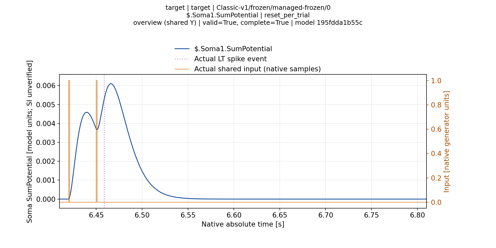
Classic-v1/silent-nonseparable/candidate-0000 Classic-v1/frozen/managed-frozen/0 soma1 overview
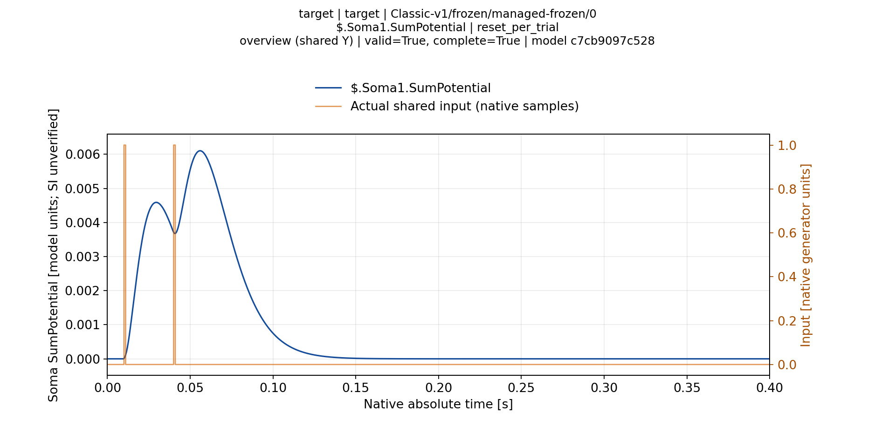
Classic-v1/fresh-frozen/evaluation Classic-v1/frozen/managed-frozen/after-managed-calibration/0 soma1 overview
Classic-v1/fresh-frozen/evaluation Classic-v1/frozen/managed-frozen/after-managed-calibration/0 soma1 zoom-001
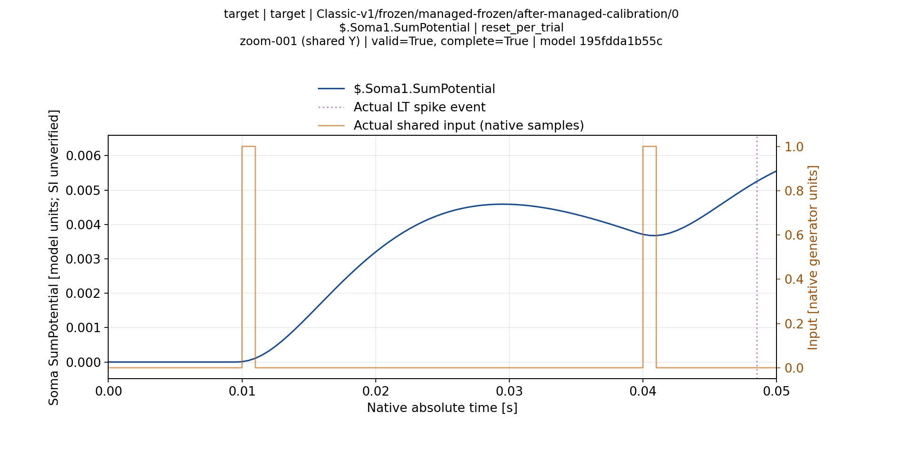
Classic-v1/fresh-frozen/evaluation Classic-v1/frozen/managed-frozen/after-managed-calibration/0 soma2 overview
Classic-v1/fresh-frozen/evaluation Classic-v1/frozen/managed-frozen/after-managed-calibration/0 soma2 zoom-001
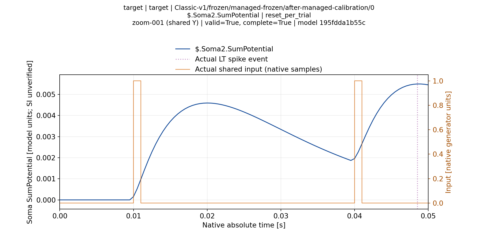
Classic-v1/fresh-frozen/evaluation Classic-v1/frozen/managed-frozen/after-managed-calibration/1 soma1 overview
Classic-v1/fresh-frozen/evaluation Classic-v1/frozen/managed-frozen/after-managed-calibration/1 soma2 overview
Classic-v1/fresh-frozen/evaluation Classic-v1/frozen/managed-frozen/after-managed-calibration/2 soma1 overview
Classic-v1/fresh-frozen/evaluation Classic-v1/frozen/managed-frozen/after-managed-calibration/2 soma2 overview
Classic-v1/fresh-frozen/evaluation Classic-v1/frozen/managed-frozen/after-managed-calibration/3 soma1 overview
Classic-v1/fresh-frozen/evaluation Classic-v1/frozen/managed-frozen/after-managed-calibration/3 soma2 overview
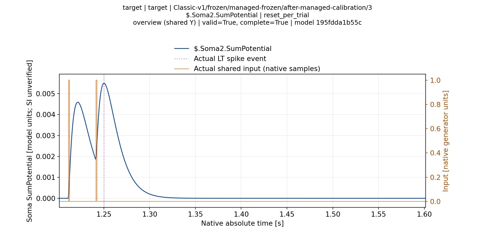
Classic-v2/measured-grid/candidate-0000 Classic-v2/frozen/managed-frozen/0 soma1 overview
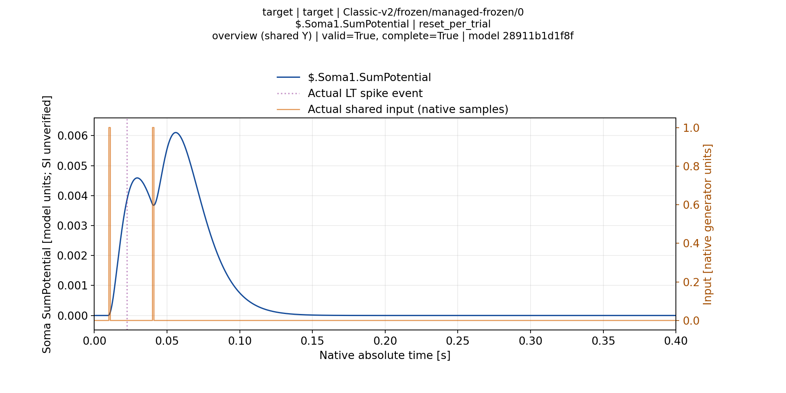
Classic-v2/measured-grid/candidate-0001 Classic-v2/frozen/managed-frozen/0 soma1 overview
Classic-v2/measured-grid/candidate-0002 Classic-v2/frozen/managed-frozen/0 soma1 overview
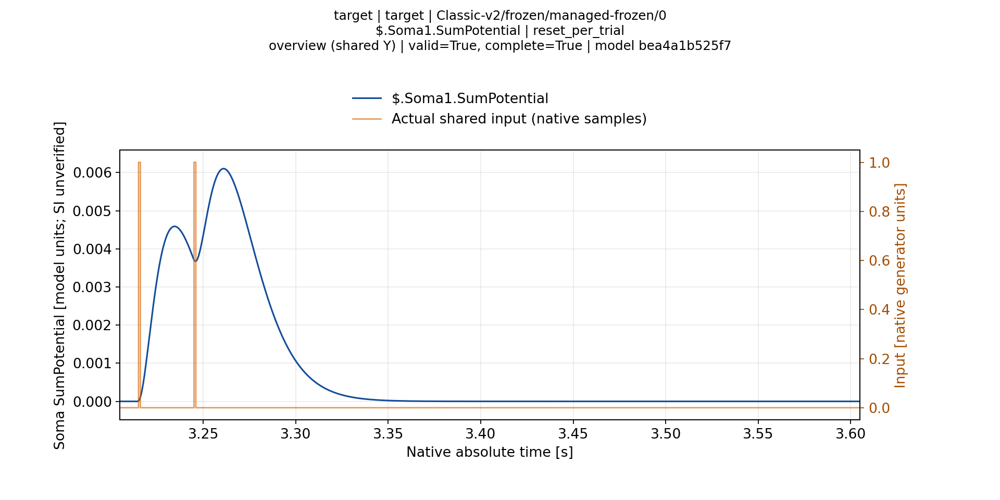
Classic-v2/measured-grid/candidate-0003 Classic-v2/frozen/managed-frozen/0 soma1 overview
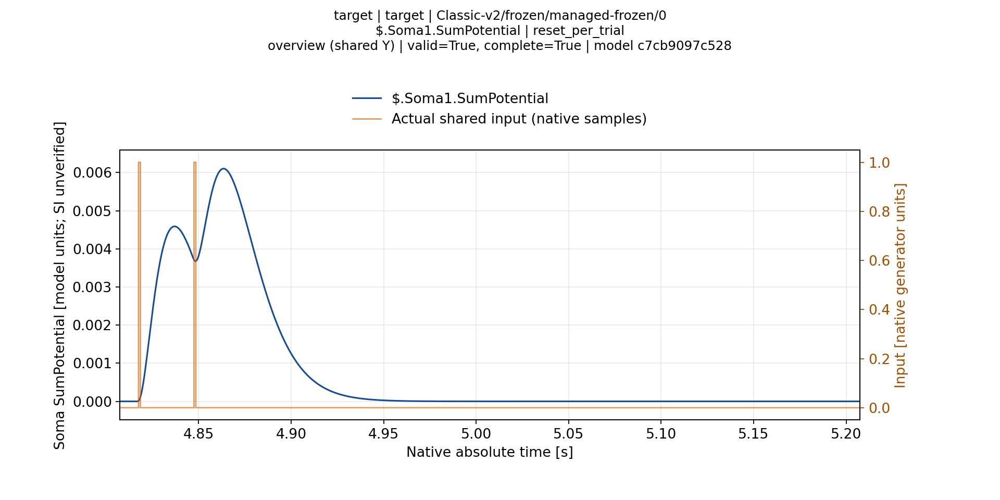
Classic-v2/measured-grid/fresh-confirmation Classic-v2/frozen/managed-frozen/0 soma1 overview
Classic-v2/silent-nonseparable/candidate-0000 Classic-v2/frozen/managed-frozen/0 soma1 overview
Classic-v2/fresh-frozen/evaluation Classic-v2/frozen/managed-frozen/after-managed-calibration/0 soma1 overview
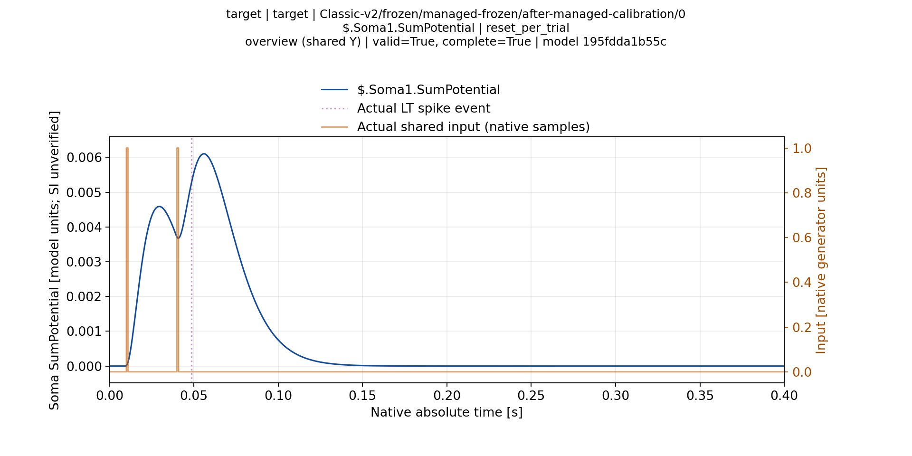
Classic-v2/fresh-frozen/evaluation Classic-v2/frozen/managed-frozen/after-managed-calibration/0 soma1 zoom-001
Classic-v2/fresh-frozen/evaluation Classic-v2/frozen/managed-frozen/after-managed-calibration/0 soma2 overview
Classic-v2/fresh-frozen/evaluation Classic-v2/frozen/managed-frozen/after-managed-calibration/0 soma2 zoom-001
Classic-v2/fresh-frozen/evaluation Classic-v2/frozen/managed-frozen/after-managed-calibration/1 soma1 overview
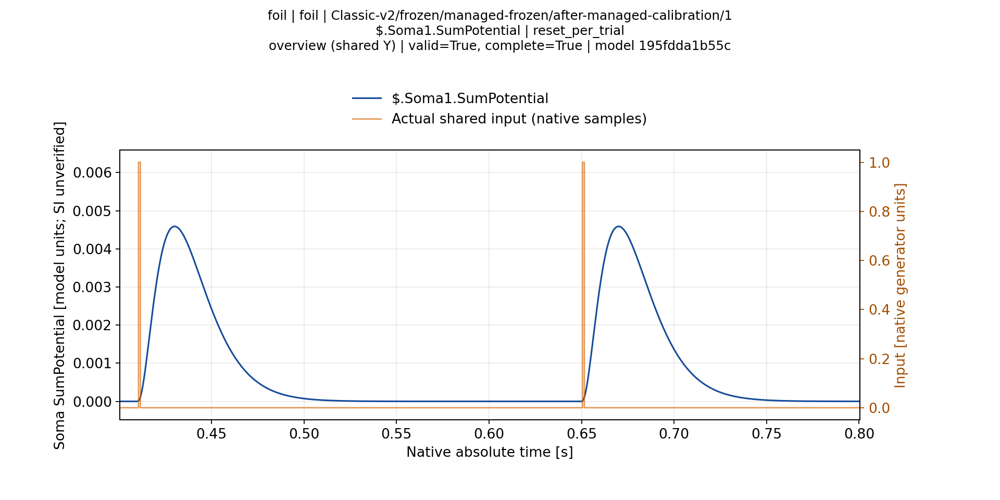
Classic-v2/fresh-frozen/evaluation Classic-v2/frozen/managed-frozen/after-managed-calibration/1 soma2 overview
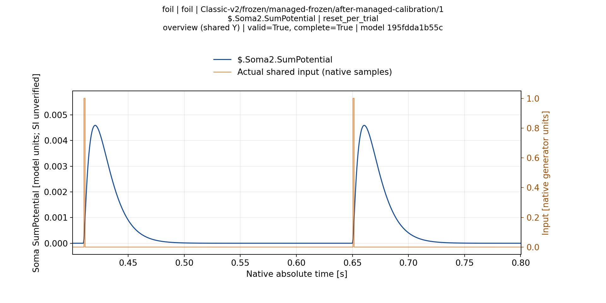
Classic-v2/fresh-frozen/evaluation Classic-v2/frozen/managed-frozen/after-managed-calibration/2 soma1 overview
Classic-v2/fresh-frozen/evaluation Classic-v2/frozen/managed-frozen/after-managed-calibration/2 soma2 overview
Classic-v2/fresh-frozen/evaluation Classic-v2/frozen/managed-frozen/after-managed-calibration/3 soma1 overview
Classic-v2/fresh-frozen/evaluation Classic-v2/frozen/managed-frozen/after-managed-calibration/3 soma2 overview
Branch-v1/measured-grid/candidate-0000 Branch-v1/frozen/managed-frozen/0 soma1 overview
Branch-v1/measured-grid/candidate-0001 Branch-v1/frozen/managed-frozen/0 soma1 overview
Branch-v1/measured-grid/candidate-0002 Branch-v1/frozen/managed-frozen/0 soma1 overview
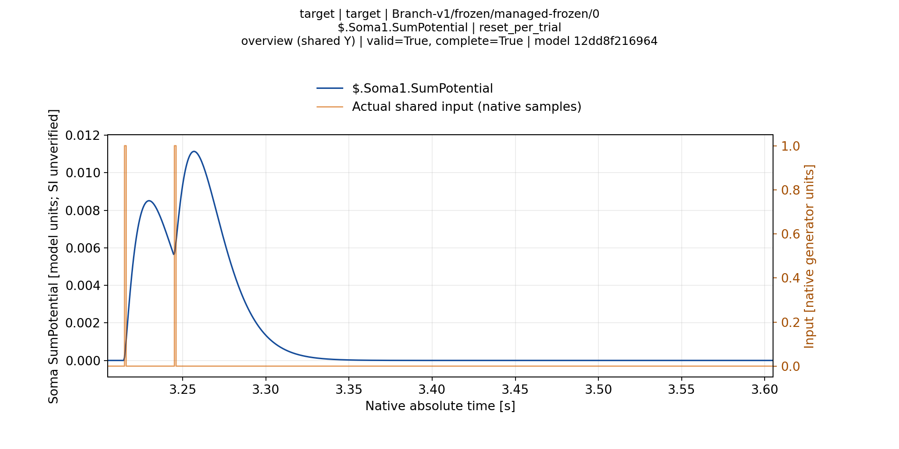
Branch-v1/measured-grid/candidate-0003 Branch-v1/frozen/managed-frozen/0 soma1 overview
Branch-v1/measured-grid/fresh-confirmation Branch-v1/frozen/managed-frozen/0 soma1 overview
Branch-v1/silent-nonseparable/candidate-0000 Branch-v1/frozen/managed-frozen/0 soma1 overview

Branch-v1/fresh-frozen/evaluation Branch-v1/frozen/managed-frozen/after-managed-calibration/0 soma1 overview
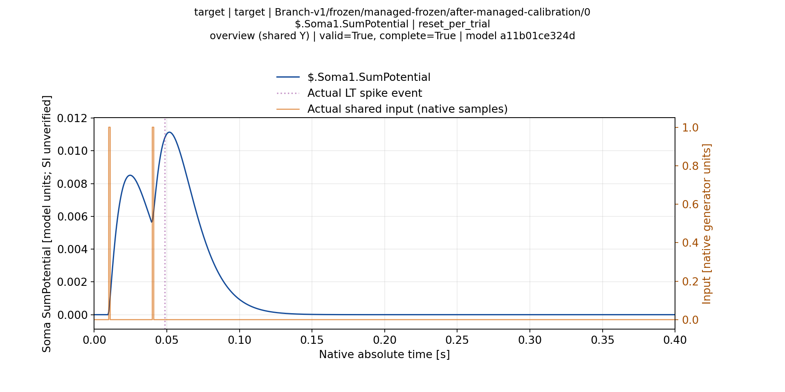
Branch-v1/fresh-frozen/evaluation Branch-v1/frozen/managed-frozen/after-managed-calibration/0 soma1 zoom-001
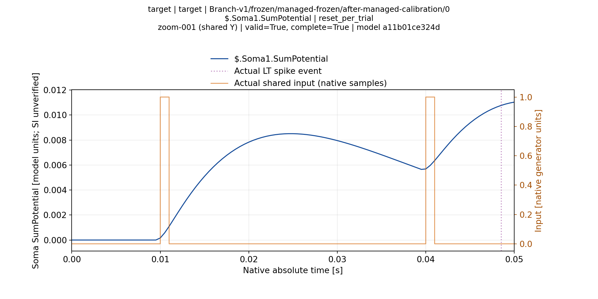
Branch-v1/fresh-frozen/evaluation Branch-v1/frozen/managed-frozen/after-managed-calibration/1 soma1 overview
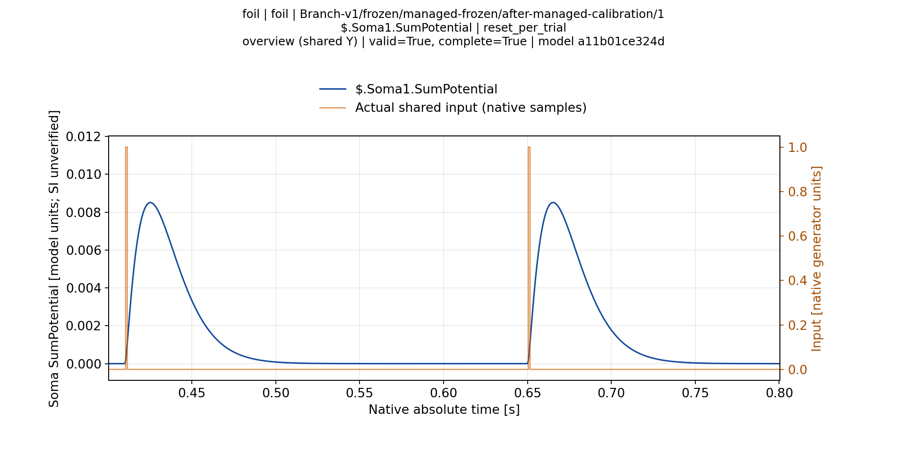
Branch-v1/fresh-frozen/evaluation Branch-v1/frozen/managed-frozen/after-managed-calibration/2 soma1 overview
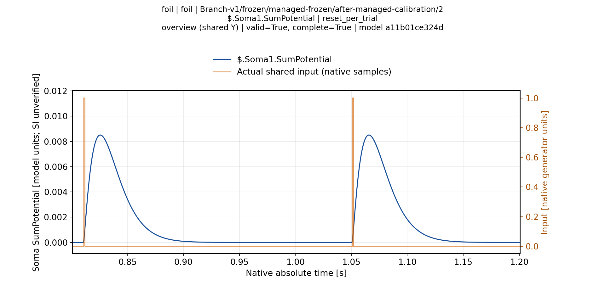
Branch-v1/fresh-frozen/evaluation Branch-v1/frozen/managed-frozen/after-managed-calibration/3 soma1 overview
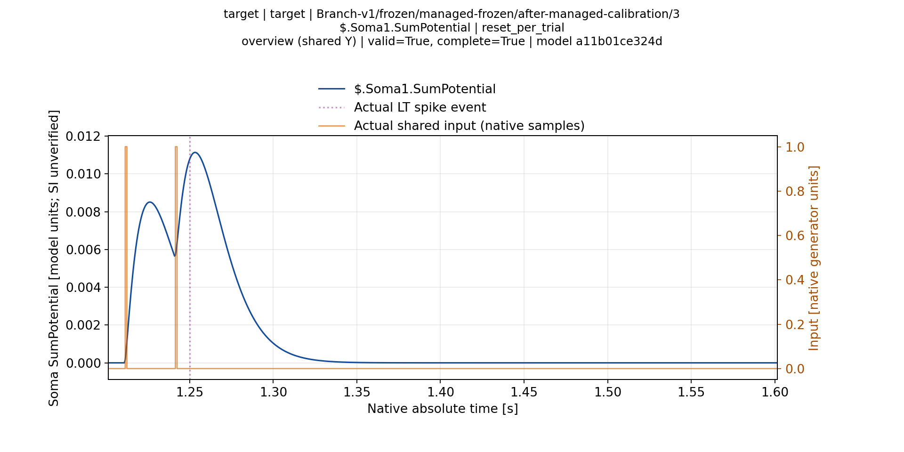
Branch-v2/measured-grid/candidate-0000 Branch-v2/frozen/managed-frozen/0 soma1 overview
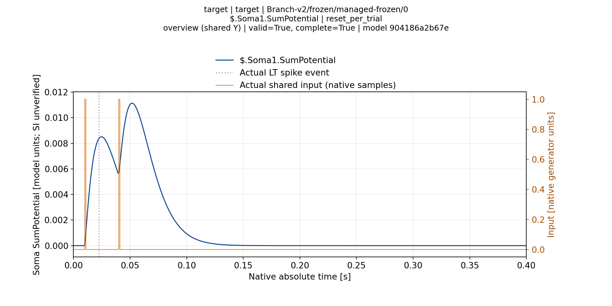
Branch-v2/measured-grid/candidate-0001 Branch-v2/frozen/managed-frozen/0 soma1 overview
Branch-v2/measured-grid/candidate-0002 Branch-v2/frozen/managed-frozen/0 soma1 overview
Branch-v2/measured-grid/candidate-0003 Branch-v2/frozen/managed-frozen/0 soma1 overview
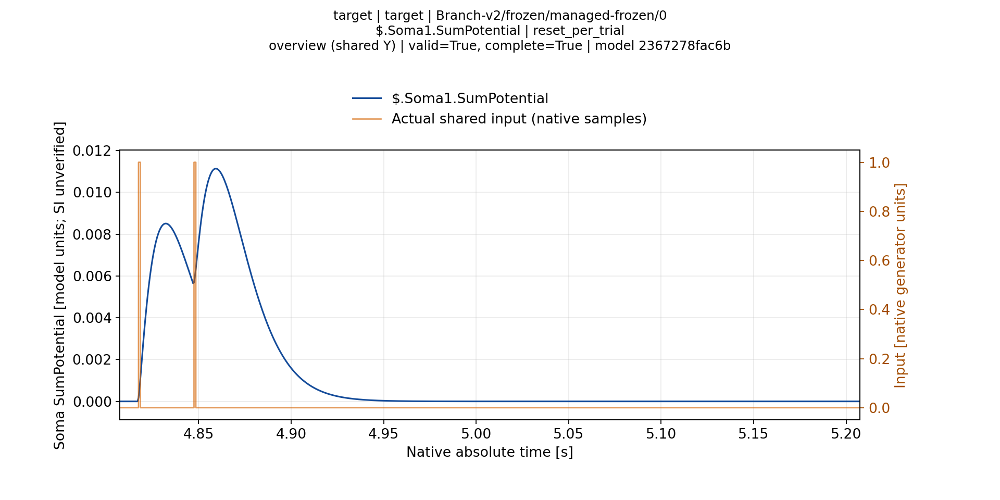
Branch-v2/measured-grid/fresh-confirmation Branch-v2/frozen/managed-frozen/0 soma1 overview
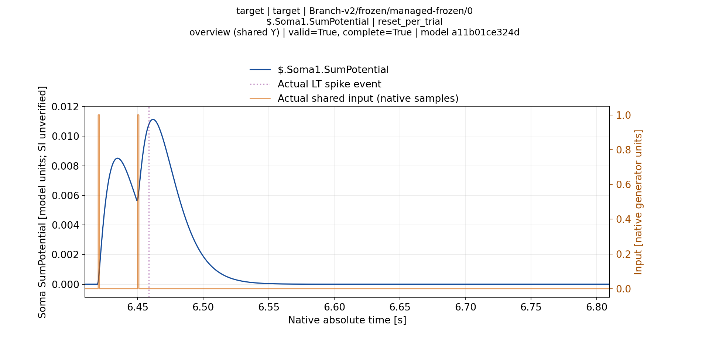
Branch-v2/silent-nonseparable/candidate-0000 Branch-v2/frozen/managed-frozen/0 soma1 overview
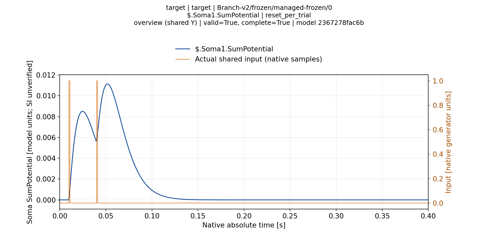
Branch-v2/fresh-frozen/evaluation Branch-v2/frozen/managed-frozen/after-managed-calibration/0 soma1 overview
Branch-v2/fresh-frozen/evaluation Branch-v2/frozen/managed-frozen/after-managed-calibration/0 soma1 zoom-001
Branch-v2/fresh-frozen/evaluation Branch-v2/frozen/managed-frozen/after-managed-calibration/1 soma1 overview
Branch-v2/fresh-frozen/evaluation Branch-v2/frozen/managed-frozen/after-managed-calibration/2 soma1 overview
Branch-v2/fresh-frozen/evaluation Branch-v2/frozen/managed-frozen/after-managed-calibration/3 soma1 overview